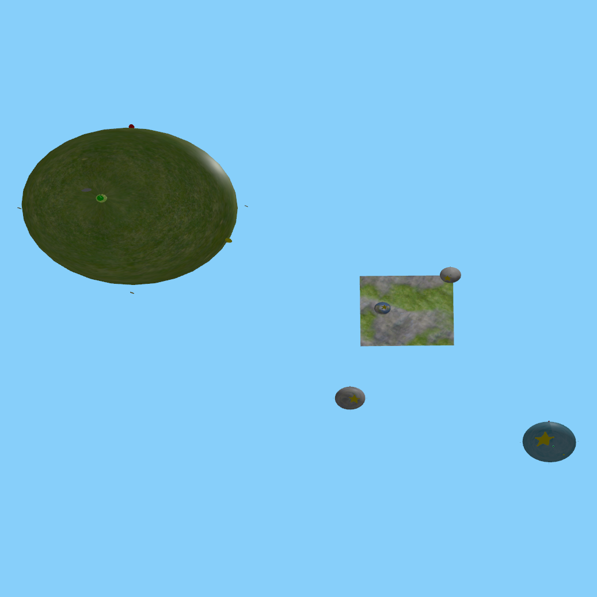
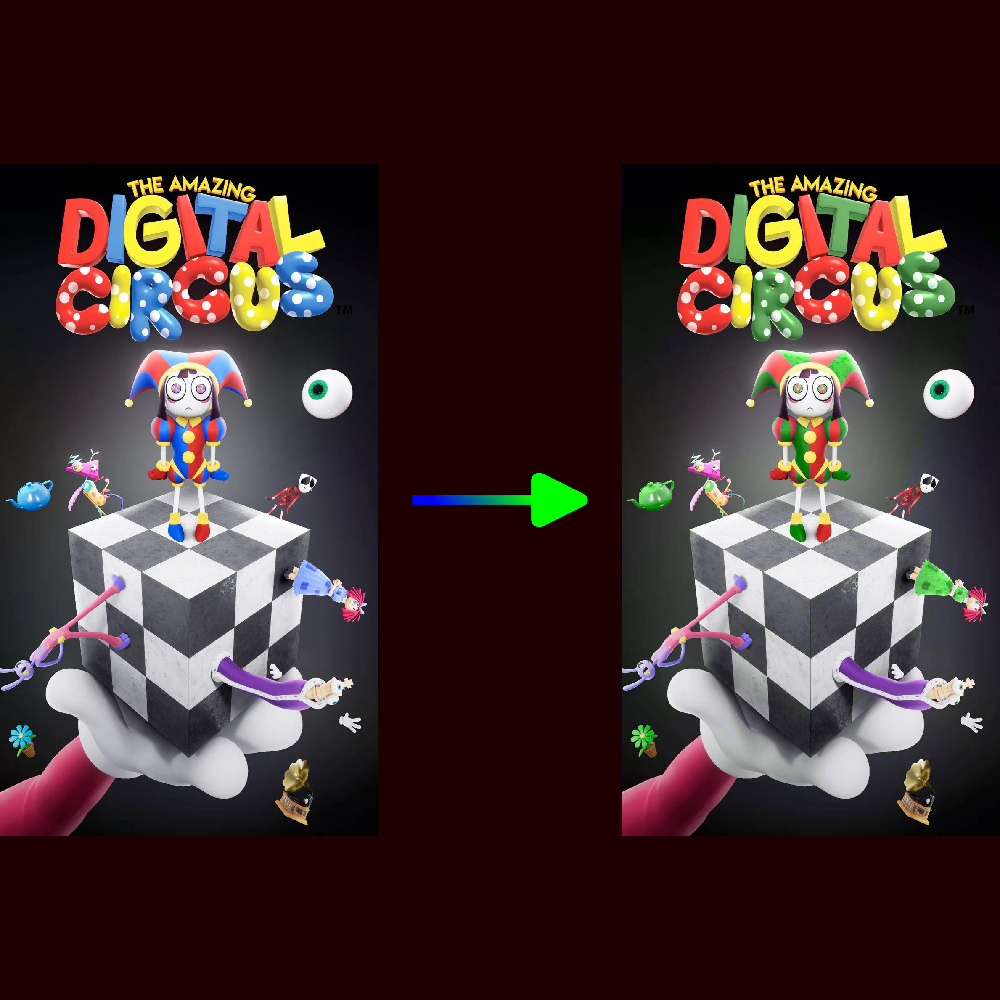
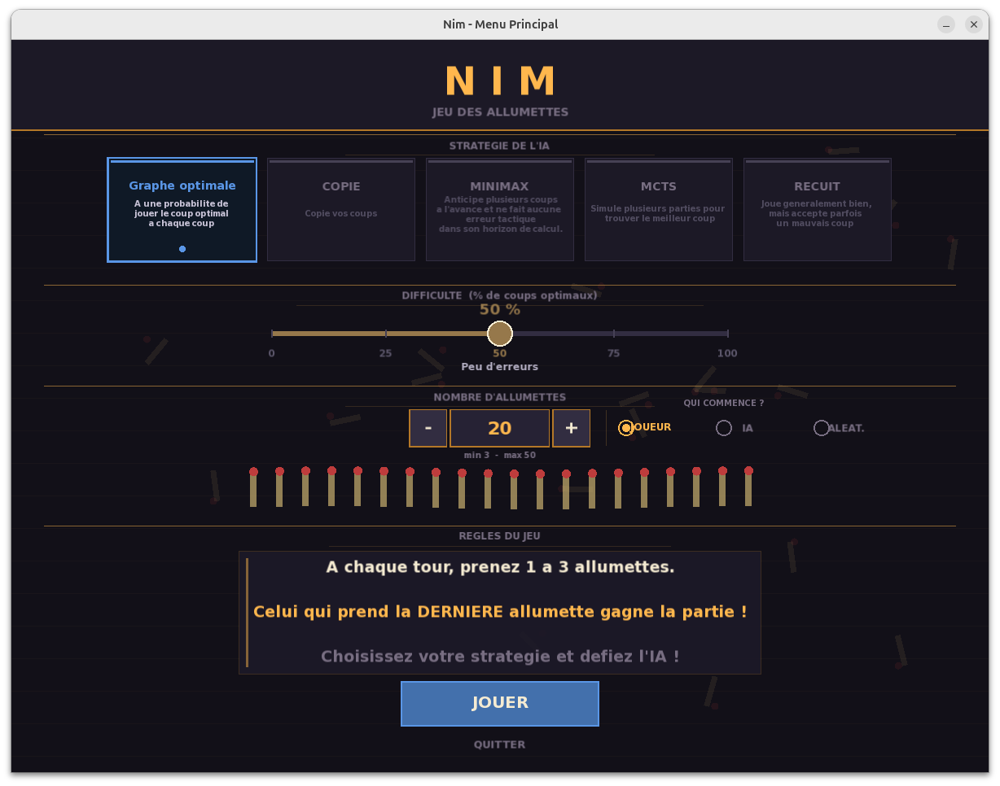
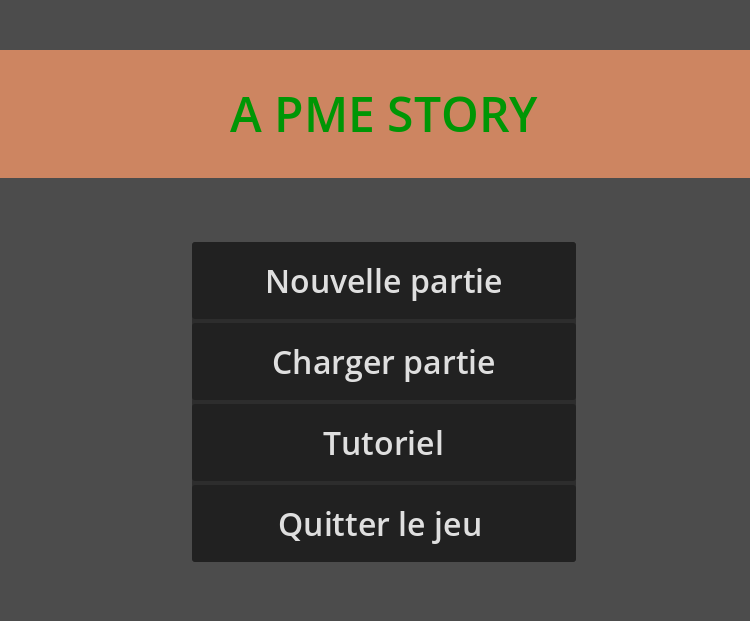
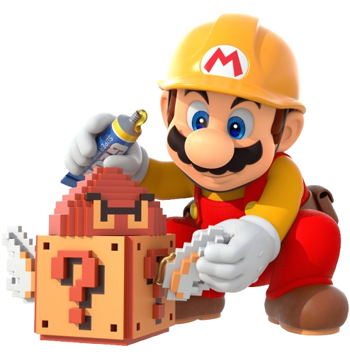
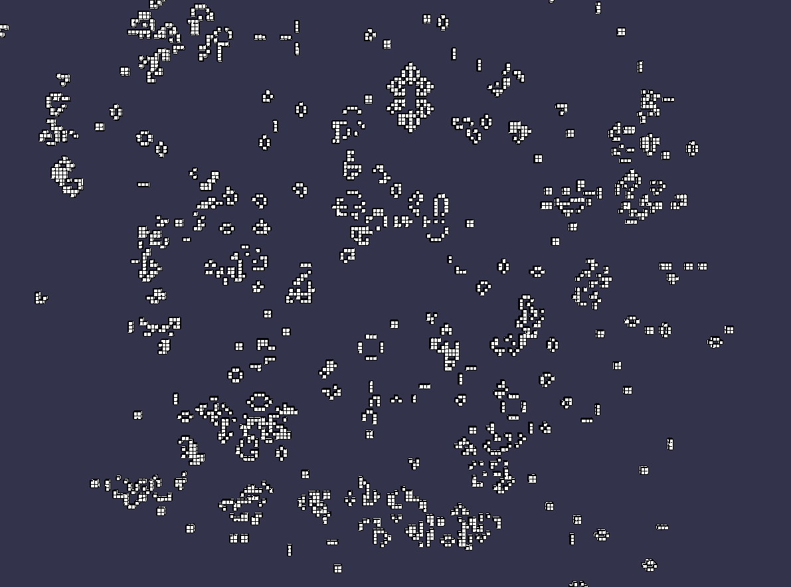

 Moteur de jeux 3D
Moteur de jeux 3D
Projet universitaire de moteur de jeux 3D reprenant la physique des jeux Super Mario Galaxy.

Projet universitaire de moteur de jeux 3D reprenant la physique des jeux Super Mario Galaxy.

Projet universitaire d'harmonisation des couleurs sur des images 2D. Permet de changer spécifiquement une couleur d'une image, ou de changer toute la colorimétrie d'une image.

Projet universitaire dans lequel on a créer une IA permettant de jouer contre un utilisateur humain au jeux de Nim. L'IA possèdes différentes stratégies avec des efficacités variables.

Projet universitaire en cours de développement. Le but est de faire un jeu de gestion inspiré des 4X enseignant les bases de l'informatiques et de la gestion d'entreprise.

Projet universitaire en cours de développement. Le but est d'anonymiser des visages sur des images à l'aide d'un réseau de neurones, et que cette anonymisation soit réversible.

Projet personnel de développement d'un jeu de la vie 3D utilisant openGL. Le but était de trouver des règles intéressantes pour ce jeu dans un espace 3D.